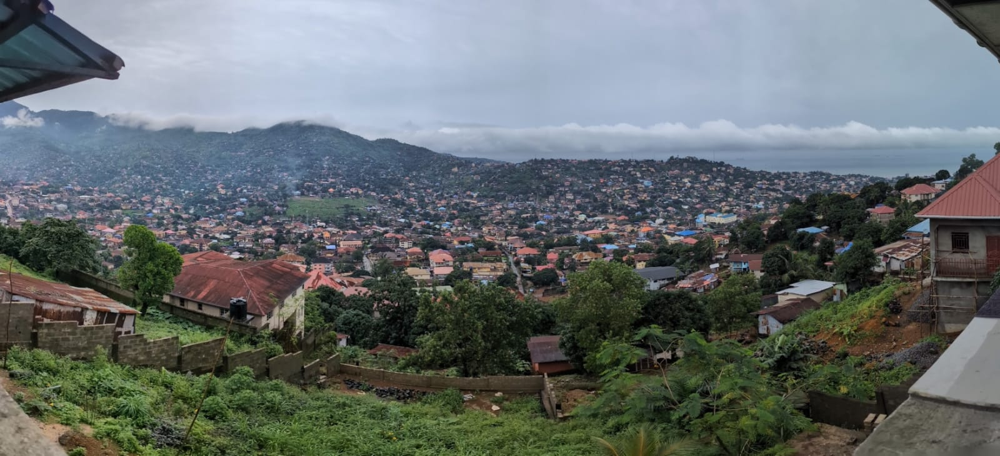
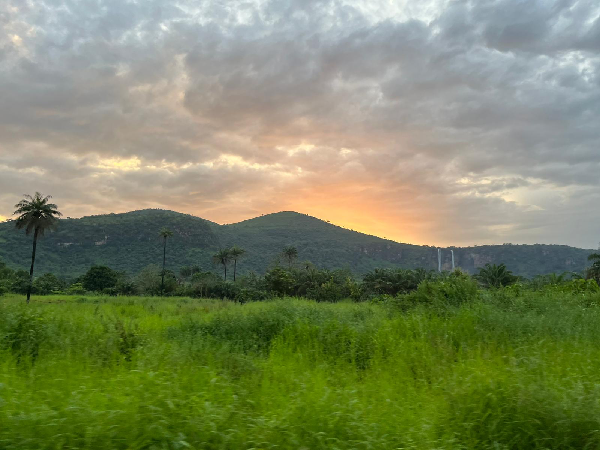

My research is grounded in extensive field experience. I have spent over three years living and working in Sierra Leone, and have conducted fieldwork in Kenya over the past two years.
These experiences have shaped my research on risk, decision-making, and agricultural investment, and have informed my approach to experiments and policy-relevant work. I enjoy working at the intersection of theory and implementation by designing studies that engage directly with individuals, institutions, and real-world constraints.



Photos from fieldwork and travel in Sierra Leone.